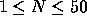
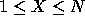

| M*A*S*H |
Corporal Klinger is a member of the 4077th Mobile Army Surgical Hospital in the Korean War; and he will do just about anything to get out. The U.S. Army has made an offer for a lottery that will choose some number of lucky people (X) to return to the states for a recruiting tour. Klinger needs your help getting out.
The lottery is run by lining up all the members of the unit at attention and eliminating members by counting off the members from 1 to N where N is a number chosen by pulling cards off of the top of a deck. Every time N is reached, that person falls out of the line, and counting begins again at 1 with the next person in line. When the end of the line has been reached (with whatever number that may be), the next card on the top of the deck will be taken, and counting starts again at 1 with the first person in the remaining line. The last X people in line get to go home.
Klinger has found a way to trade a stacked deck with the real deck just before the selection process begins. However, he will not know how many people will show up for the selection until the last minute. Your job is to write a program that will use the deck Klinger supplies and the number of people in line that he counts just before the selection process begins and tell him what position(s) in the line to get in to assure himself of a trip home.
A simple example with 10 people, 2 lucky spots, and the numbers from cards 3, 5, 4, 3, 2 would show that Klinger should get in positions 1 or 8 to go home.
For each selection, you will be given a line of 22 integers. The first integer (  ) tells how many people will participate in the lottery. The second integer (  ) is how many lucky "home" positions will be selected. The next 20 integers are the values of the first 20 cards in the deck. Card values are interpretted to integer values between 1 and 11 inclusive.
For each input line, you are to print the message ``Selection #A" on a line by itself where A is the number of the selection starting with 1 at the top of the input file. The next line will contain a list of ``lucky" positions that Klinger should attempt to get into. If Klinger's deck doesn't get the job done by the time the 20th card is used, print all remaining people in line. The list of ``lucky" positions is then followed by a blank line.
10 2 3 5 4 3 2 9 6 10 10 6 2 6 7 3 4 7 4 5 3 2 47 6 11 2 7 3 4 8 5 10 7 8 3 7 4 2 3 9 10 2 5 3
Selection #1 1 8 Selection #2 1 3 16 23 31 47